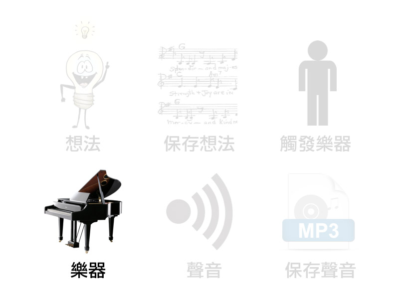
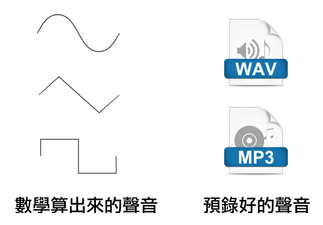
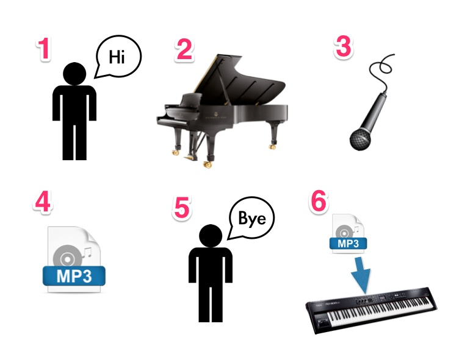
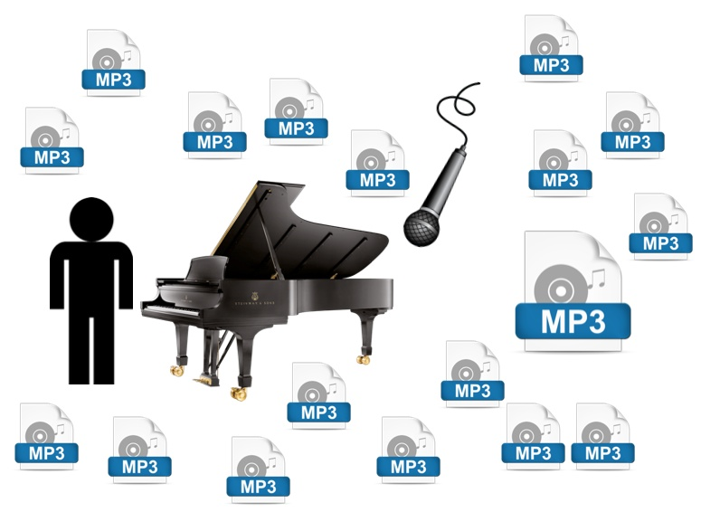
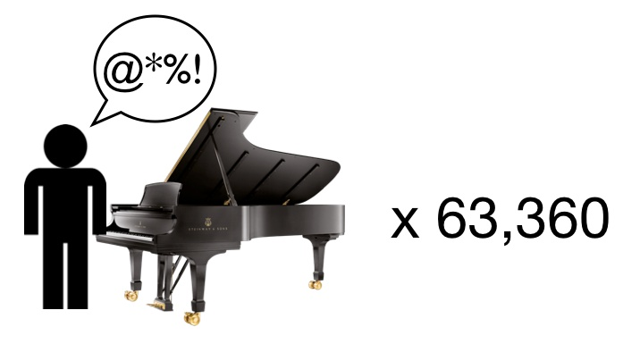

電子樂器如何發出聲音？
107820004
上官昌華
發出聲音的東西

根據維基百科上的定義，「樂器」就是「被用來發出聲音的裝置」，基本上任何可以發出聲音的物品都可以被稱作為樂器，一個物品是否為樂器，是根據使用者使用它的「意圖」而定。根據這個理論，如果你在廚房切菜的時候，覺得菜刀和砧板發出的聲音很好聽，於是你就故意很有節奏的切菜，這麼一來你的菜刀和砧板就變成了「樂器」。反過來說，有些房屋建商喜歡租一台高級平台鋼琴放在他們的接待中心，只是覺得這樣很漂亮但並沒有彈奏它的意圖，這個時候這台鋼琴就變得不是一個樂器了。
電子樂器如何發出聲音？

在家裡使用的數位鋼琴、演唱會時歌手在舞台上彈奏的keyboard、以及iPhone或者是iPad上面的音樂軟體都是怎麼發出聲音的呢？為什麼有些電子樂器的聲音，可以聽起來這麼像真實的樂器？數位電子樂器產生聲音的方式其實有很多很多種，但大致上我們可以把它歸成兩大類：一種是「用數學算出來的聲音」，另一種是「預錄好的聲音」。你在一般樂器行裡買到的、設計給一般家用的電子樂器，大多是屬於後者，所以我們今天要把焦點先放在它們上面。
教你的電子樂器說話

家裡的數位鋼琴，裡面又沒有槌子和琴弦，為什麼可以發出真的鋼琴的聲音呢？其實原理很簡單，是因為你的樂器製造商做了以下的六個步驟：
– 他們找來一個人和一台真的鋼琴，最好是很高級、很貴的牌子。
– 然後他們在鋼琴旁邊架麥克風。
– 叫那個人按下鋼琴的每一個鍵一次，錄下來存成音樂檔案。因為鋼琴總共有88個鍵，所以他要彈88次，你得到88個音樂檔案。
– 把剛剛錄下來的音樂檔案存到數位鋼琴裡面，完成！
教你的電子樂器說話
所以你的數位鋼琴，之所以可以發出真的鋼琴的聲音，是因為它裡面存的，的確就是預先錄好的真的鋼琴的聲音。樂器製造商只要在電鋼琴裡的程式設定，按下每個琴鍵，就播放對應的聲音檔案就可以了。這種使用預先錄好的聲音來發聲的電子樂器，我們統稱它們為「取樣器」（sampler）。
那大聲小聲呢？

數位鋼琴為什麼也能像真的鋼琴一樣可以彈大聲小聲呢？那是因為數位鋼琴的鍵盤底下有一塊電路板，它可以偵測琴鍵按下去的速度，接著把測得的速度轉換成一個數字送給取樣器的程式。不過接下來發生的事，在各種樂器就很不一樣了。通常便宜的樂器模擬強弱的做法是：拿同一個音樂檔案，當演奏者彈大力的時候就把音量開大聲一點，彈小力的時候就關小聲一點。但這種只是改變音量的做法，聽起來會很不自然，所以高級的、昂貴的樂器不會這樣做。
那大聲小聲呢？
高級的電子樂器模擬強弱的做法：
– 把彈鋼琴那個人找來，給他一台真的鋼琴，旁邊架麥克風。
– 叫他從弱到強、每一個鍵按下不同力度的20次。
– 鋼琴有88個鍵，每個琴鍵彈20次的話，你就會得到88×20=1760個音樂檔案。
– 把全部的檔案存到數位鋼琴裡，依照演奏者按鍵的力度，播放對應琴鍵、對應力度的音樂檔案。
我們把每個琴鍵所儲存的音樂檔案數量稱為「取樣層次」或「力度層次」 ，理論上取樣層次越高，就越能完整表現真實樂器的各種力度變化。
聽聽看！
接下來要播放兩個音樂例子。第一個是使用便宜的、每個鍵只有1個力度層次的鋼琴音色；第二個是昂貴的、每個鍵有20個力度層次的鋼琴音色。
第一個例子：
第二個例子：
聽聽看！
在1個層次的便宜鋼琴音色中，我不管彈大聲或者是小聲音色都是相同的，只有大小聲的差異。而在昂貴的鋼琴音色中，大小聲的音色變化就有如真的史坦威鋼琴一樣。
如果樂器製造商，真的想要做出超級擬真的鋼琴音色的話，他可能還要考慮更多鋼琴的其他的情況：鋼琴有右踏板和左踏板，兩個踏板都可以踩或者是不踩；鋼琴有琴蓋，琴蓋可以全開、半開、或者是不開；鋼琴的踏板踩下去跟放掉都會有雜音，踩下或放掉的速率不同雜音也會不同；鋼琴的放掉也會有雜音，放掉的速率不同雜音也會不同⋯⋯

所以如果你要做一個考慮到以上事項的20個層次的鋼琴音色的話，那位彈鋼琴的人必須：
– 把每一個鍵都彈過不同力度的20次，一共1760次。
– 「踩右踏板、踩左踏板、兩個踏板都踩、都不踩」這四種狀態都要有1760次，所以一共1760×4=7040 次。
– 這7040次還有「琴蓋全開、半開、不開」的三種狀態，所以7040×3=21120次。
– 為了讓重複的聲音更自然，通常同一種狀態會準備不只一個音樂檔案，假設我們每一種狀態都準備三個檔案就好的話（以高階樂器來說算是少的了），那他就要彈21120×3=63360次。
– 以上都全部彈過之後，再來錄下每一個鍵用各種不同速率放開的聲音，踏板用不同速率放開和踩下的聲音⋯⋯
這個被我們請來彈鋼琴的可憐人，要坐在鋼琴前面彈至少63360個單音，也難怪他會覺得有一點累了。